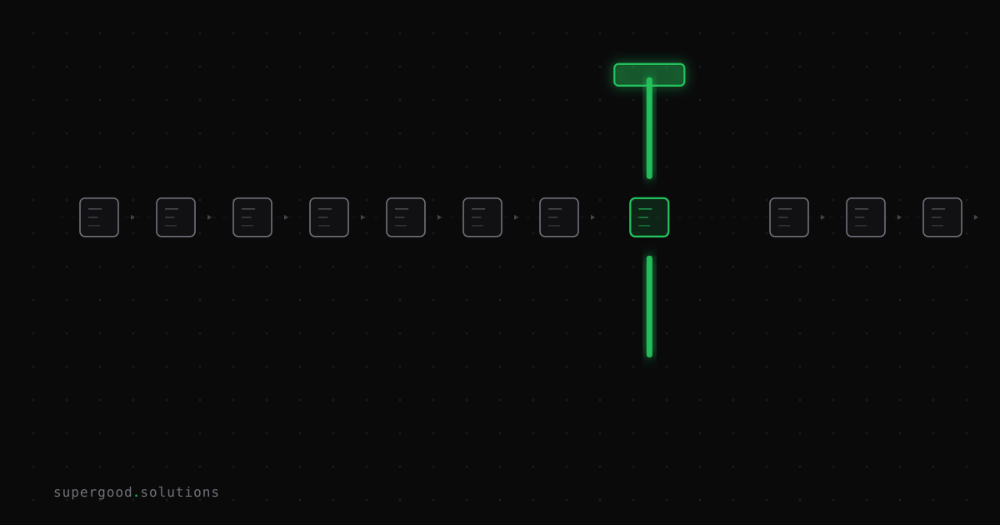

When AI Does the Work, Your Test Suite Needs a New Contract
TL;DR: If your agent's tests break every time you swap models or tweak a prompt, the problem isn't the model — it's that you're testing implementation, not intent. Teams that move to behavior-based contracts stop rewriting their test suite every release cycle.
Key Insight
A traditional unit test asserts one thing: given input X, produce output Y. That works when the code path is fixed. It falls apart with agents, because an agent can solve the same task three different valid ways in three different runs — different tool call order, different phrasing, different number of steps — and still be correct. Exact-match assertions can't tell "the agent did something new but right" apart from "the agent broke." You get false failures on good runs and, just as dangerous, false passes when a lucky output happens to match.
The fix borrows from behavior-driven development (BDD): write the contract in terms of what the agent must accomplish and what it must never do, not the literal sequence of calls it takes to get there. A contract like "given an unpaid invoice over 90 days, the agent escalates to a human before taking write-off action" survives a model swap, a prompt rewrite, even a change in which tools the agent has access to — because it's checking intent and boundaries, not execution path.
Why Teams Miss This
Most teams testing their first agent reach for what they already know: unit tests, mocked tool calls, snapshot assertions on the exact response text. It feels rigorous because it's familiar. Then the model gets upgraded, or the prompt gets tuned, and half the suite turns red — not because the agent got worse, but because it phrased the same correct answer differently or called two tools in a different order.
The instinct at that point is usually to either loosen assertions until they're meaningless ("does the response contain any of these keywords") or freeze the model version to stop the tests from breaking. Both are surrenders. Freezing the model means you can't take advantage of upgrades. Loosening assertions means you're no longer actually testing anything — you've just made the suite quieter, not the agent more reliable.
The deeper mistake is treating agent output like function output. A function is deterministic by contract; an agent is deterministic in goal, not in path. Your tests need to match which one you're actually shipping.
How to Actually Do It
Write contracts as Given/When/Then scenarios that describe required behavior and hard boundaries, then verify them with a mix of trajectory checks (did it call the right tools, in a valid order, with valid arguments) and outcome checks (did the end state satisfy the goal) — not string matching on the final message.
Feature: Invoice escalation
Scenario: Agent must escalate old unpaid invoices
Given an invoice is 90+ days overdue
When the agent processes the account
Then the agent must NOT approve a write-off directly
And the agent must call the "flag_for_human_review" tool
And the final state must include an escalation recordTranslate that into an eval harness with two layers:
- Trajectory assertions — inspect the tool-call log, not the prose. Did the agent call
flag_for_human_review? Did it call anything destructive (write_off_invoice) without that gate firing first? This is pass/fail logic you can write in plain code, no LLM needed. - Outcome grading — for the parts that genuinely vary (tone, exact wording, reasoning trace), use an LLM-as-judge scoring rubric instead of exact match: does the final state and explanation satisfy the scenario's intent, on a 1–5 scale, with a documented rubric so the grader itself doesn't drift.
Run this suite on every model swap and every prompt change, and treat a passing trajectory + outcome score as the actual regression gate — not "did the CI diff show zero changes in output text."
What We've Learned
Behavioral contracts don't replace unit tests — your tool functions, parsers, and API clients still need exact-match tests, because those are deterministic. The contract layer sits one level up, at the agent-behavior boundary, and is what actually survives a model upgrade. Next experiment: track how many of these contracts break on a model version bump versus how many traditional snapshot tests break on the same bump. If the ratio isn't heavily in favor of contracts surviving, the contracts are still too tightly coupled to a specific model's habits and need to be rewritten at a higher level of intent.
Sources
- Behavioral testing for AI agents overview: Red Hat Developer
- Agent behavioral testing patterns and trajectory checks: agentpatterns.ai
- Practical framework for non-deterministic agent testing: zalt.me
- Unit, integration, and evaluation frameworks for agents: agents.net
- Agent behavioral drift and Agent Stability Index research: arXiv
Have a specific workflow in mind?
Bring it to a Quick Scan — a live working session where we'll tell you honestly whether it should be an agent, a workflow, or left alone, before you spend a dollar building it. You get 3 prioritized recommendations on the call, a one-page summary after, and the $500 credited toward any engagement within 30 days.
Get new posts + practical agent-ops notes
One email when something new goes up. No nurture sequence, no spam — unsubscribe whenever you want.